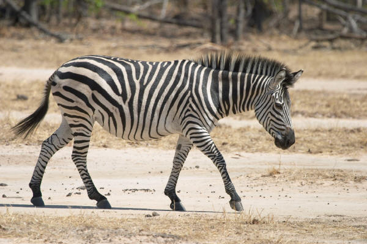
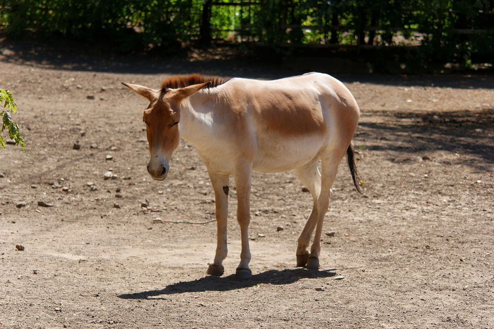
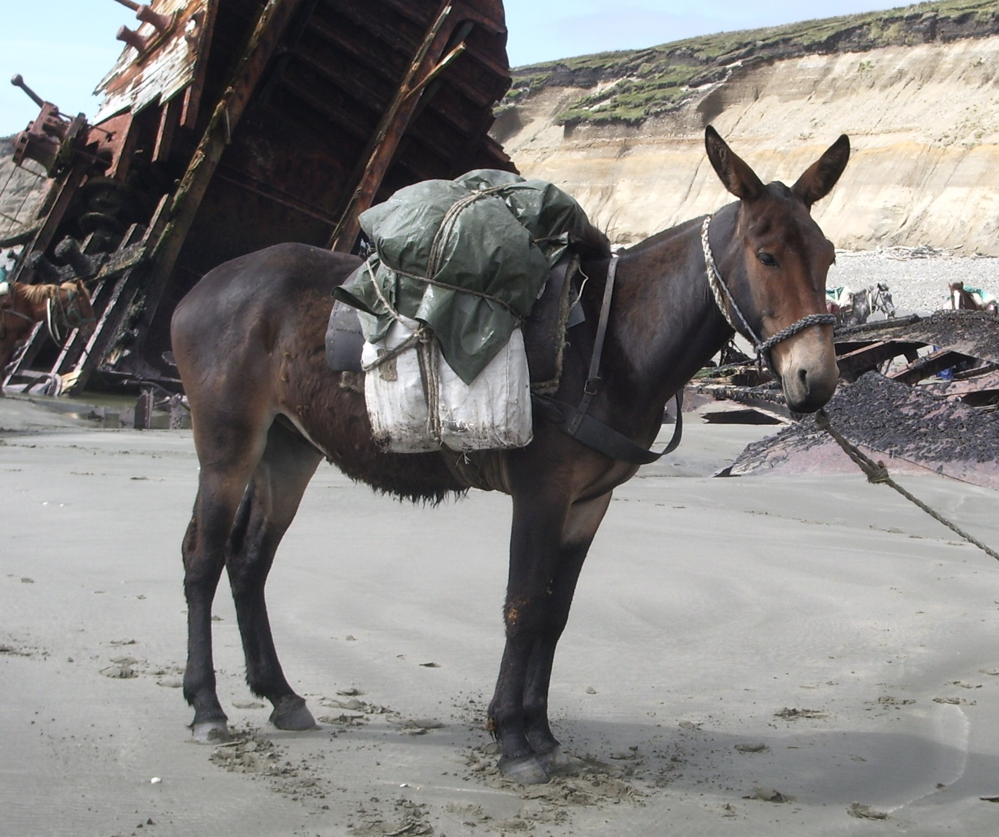
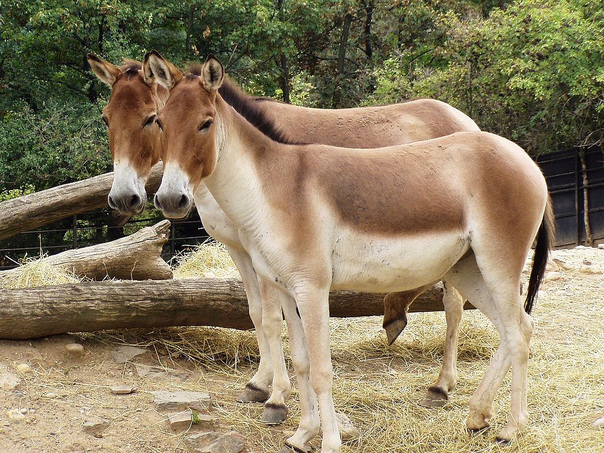

Clydesdales stand between 16.2 and 18 hands high at the withers.
Clydesdales weigh between 1,600 and 2,400 pounds when full-grown.
Although bay -- a brown body with black points on the mane, tail and legs -- is the best-known color, Clydesdales also appear in chestnut, brown, black and roan.
Conservation Status: By 2010, they have been moved to vulnerable. The Clydesdale is considered to be at "watch" status by the American Livestock Breeds Conservancy, meaning that as of 2010, fewer than 2,500 horses are registered annually in the USA and fewer than 10,000 exist worldwide. As of 2010, there are estimated to be around 5,000 Clydesdales worldwide, with around 4,000 in the US and Canada, 800 in the UK, and the rest in other countries, including Russia, Japan, Germany, and South Africa.
Plains zebra: Equus quagga

Plains zebra Traits
The common plains zebra is about 1.2–1.3 m (47–51 in) at the shoulder.
It can weigh up to 350 kg (770 lb), males being slightly bigger than females.
It was previously believed that zebras were white animals with black stripes, since some zebras have white underbellies. Embryological evidence, however, shows that the animal's background color is black and the white stripes and bellies are additions.
Conservation Status: Plains zebras are much more numerous (in comparison to other kinds of zebras) and have a healthy population. Nevertheless, they too have been reduced by hunting and loss of habitat to farming.
Onager: Equus hemionus

Onager Traits
The onager weighs about 290 kg (640 lb).
They are reddish-brown or yellowish-brown in color and have broad dorsal stripe on the middle of the back.
They are among the fastest mammals, as they can run as fast as 64 km/h (40 mph) to 70 km/h (43 mph).
Conservation Status: Like many other large grazing animals, the onager's range has contracted greatly under the pressures of poaching and habitat loss. Previously listed as Endangered, onagers have been classified as Near Threatened by IUCN in 2015.
Przewalski's horse: Equus ferus przewalskii
Przewalski's horse Traits
Przewalski's horse is stockily built in comparison to domesticated horses, with shorter legs.
Typical height is about 12–14 hands (48–56 inches, 122–142 cm).
They weigh around 300 kilograms (660 lb).
Conservation Status: These animals are endangered, though efforts are being made to keep them around.
Mule: Equus mulus

Mule Traits
Mules come in a variety of shapes, sizes and colors, from minis under 50 lb (23 kg) to maxis over 1,000 lb (454 kg).
The coats of mules come in the same varieties as those of horses.
A mule makes a sound that is similar to a donkey's but also has the whinnying characteristics of a horse (often starts with a whinny, ends in a hee-haw).
Conservation Status: Least Concern; it's common or abundant and is likely to survive in the wild.
Kiang: Equus kiang

Kiang Traits
The kiang is the largest of the wild asses, with an average height at the withers of 13.3 hands (55 inches, 140 cm).
They have a large head, with a blunt muzzle and a convex nose.
The coat is a rich chestnut colour, darker brown in winter and a sleek reddish brown in late summer, when the animal moults its woolly fur.
Conservation Status: Least Concern; they don't appear to be in any danger.